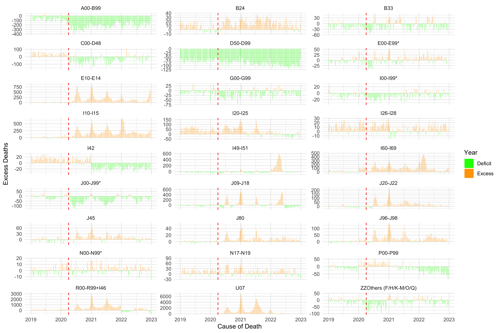
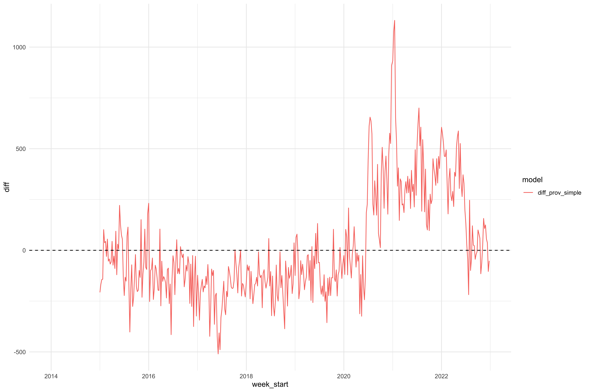

National Excess Mortality Overview
excess-mortality
national
provincial
modelling
National observed vs expected deaths analysis with provincial breakdowns
1 Overview
This analysis presents national and provincial excess mortality estimates for South Africa, comparing observed deaths against model-predicted expected deaths.
Use the table of contents to navigate to cause-specific analyses, or see the detailed Cause Code Analysis project.
2 National Picture
2.1 Observed vs Expected Deaths
2.2 Observed vs Expected by ICD Code

2.3 Difference by ICD Code

2.4 Cause Heatmap

3 Provincial Level Modelling
TM’s NB model with interaction terms takes a relatively longer time and similar results can be achieved with no interaction terms but adding provincial terms. The models appear to do well at the national level compared to Tom’s model.
NoteModel Specification
The provincial simple model did not perform meaningfully better when adding:
- Interaction terms
- Population offsets
- Fourier terms for seasonality
3.1 National vs Provincial Model Comparison

3.2 Provincial Observed vs Expected

The provincial model doesn’t appear to do well with ICD groupings at the provincial level; this can be viewed when inspecting the provincial model ICD observed vs expected plots in the Cause Code Analysis project.
4 Methods
4.1 Data Sources
- Vital Registration: Death records from 2015-2022
- Population: Mid-year population estimates from Stats SA
4.2 Statistical Model
We use a negative binomial generalized linear model:
\[ Y_t \sim \text{NegBin}(\mu_t, \theta) \]
\[ \log(\mu_t) = \beta_0 + \beta_{\text{week}} \cdot \text{week}_t + \beta_{\text{time}} \cdot t + \log(\text{pop}_t) \]
See the CI Modelling Methods project for detailed methodology on confidence interval construction.
5 Key Findings
ImportantSummary
- Excess mortality peaked during COVID-19 waves (2020-2022)
- Provincial patterns show significant heterogeneity
- J-coded (respiratory) deaths show the largest excess